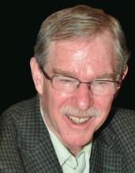

Джеймс Шапиро, профессор кафедры биохимии и молекулярной биологии в университете Чикаго, является ведущим бактериальным генетиком, первооткрывателем мобильных генетических элементов бактерий и ключевым исследователем, задействованным в формировании области по их изучению. Самый первый сторонник "естественной генетической инженерии" как основной особенности эволюции, он является ведущим научным критиком традиционной эволюционной теории на протяжении 20 лет.
Шапиро является редактором изданий "Инсерционные элементы ДНК, эписомы и плазмиды" (DNA Insertion Elements, Episomes, and Plasmids, 1977, Cold Spring Harbor Press), "Мобильные генетические элементы" (Mobile Genetic Elements, 1983, Academic Press), "Бактерии как многоклеточные организмы" (Bacteria as Multicellular Organisms, 1997, Oxford University Press). Он имеет степень доктора (Ph.D.) в генетике, которую получил в Кембриджском университете.
В разное время профессор Шапиро работал под руководством Сидней Бреннера (Sydney Brenner) [1] и Барбары МакКлинток (Barbara McClintock) [2], с которой был также дружен и которая, по выражению автора, открыла его глаза на науку в общем и на эволюцию в частности. Докторская диссертация автора посвящена структуре галактозного оперона в кишечной палочке (Escherichia coli K12), где впервые сделано предположение о наличии мобильных генетических элементов [3] у бактерий. Позже он подтверждает эту гипотезу, работая в лаборатории Франсуа Жакоба [4] в Пастеровском институте. Наряду с другими важными открытиями, в 1984 году он опубликовал первый пример того, что сейчас называется "адаптивной мутацией". До этого в Гарвардской Медицинской Школе он с коллегами клонировал и очистил lac оперон [5] кишечной палочки, используя генетические манипуляции. Это достижение получило всемирное признание. В 1979 году он сформулировал первую точную молекулярную модель перемещения и копирования фага Мю [6] и других транспозонов [7] . Совместно с Патом Хиггинсом (Pat Higgins) в 1989 он показал, что активация фага Мю в колонии бактерий организована в пространстве. Иными словами, это не случайный процесс, а строго скоординированный.
Предыдущий параграф призван показать, что книга написана не профаном и не образованным "любителем чтения" научной литературы, а серьезным специалистом и профессионалом, добившимся многого в научной среде. Со 175-й по 239-ю страницы книга содержит только (!) ссылки на источники, которые использовались в написании книги и которых в общей сложности 1162. Со 149-й по 174-ю страницы в книге приводится словарь специальных терминов. Книга написана для обычных людей, простым языком и всего содержит 253 страницы. Таким образом, больше четверти книги — это ссылки на профессиональную и научно-просветительскую литературу, что делает книгу просто энциклопедическим трудом. Привожу эти данные для того, чтобы не создалось впечатления, что автор сочинил книгу на свой лад и согласно своему видению проблемы. Наряду с простотой языка изложения книга обладает типичной чертой научного произведения — написана в строгих научных традициях, где каждый тезис подтверждается ссылкой на фактическое исследование вопроса. Это отличает книгу от всех современных книг по теории эволюции, особенно отечественных.
[1] Сидней Бреннер — известный южно-африканский биолог, сделавший чрезвычайно много в области раскрытия генетического кода, в том числе работая с Фрэнсисом Криком. В 2002 году Бреннер (совместно с еще двумя учеными) получил Нобелевскую премию в области медицины и физиологии за исследования генетической регуляции эмбриогенеза в маленьком круглом черве Caenorhabditis elegans — модельном организме с малым количеством генов.
[2] Барбара МакКлинток — выдающийся ученый XX столетия, известный цитогенетик, она является первооткрывателем так называемых мобильных генетических элементов — участков молекулы ДНК, которые подвижны (!) и дрейфуют с места на место в геноме. Она явилась первой женщиной, получившей Нобелевскую премию, не разделяя ее ни с кем. Ее открытия пошатнули былую веру в то, что геном — это статическая структура, передаваемая из поколения в поколение. Она разработала концепцию "управляющих элементов", согласно которой мобильные элементы могут управлять (активировать или тормозить) активность генов организма. Ее работы оказались тяжело восприняты научным сообществом, по ее собственному выражению, с "замешательством, даже враждебностью". Основываясь на этой реакции научного сообщества, она, боясь дальнейших конфликтов со сложившимися убеждениями, прекратила на время какие-либо публикации работ об управляющих элементах. Удивительно, что она всю жизнь проработала над изучением кукурузы и получила степень в ботанике, тогда как ее открытия являются фундаментальными в области генетики и эволюции. Барбара МакКлинток показала, что нужно заниматься тем, что по душе, и что пытливый ум найдет грандиозное в мелком, фундаментальное в незначительном.
[3] Мобильные генетические элементы — последовательности ДНК, которые могут перемещаться внутри генома.
[4] Известнейший французский микробиолог и генетик, получивший Нобелевскую премию за открытия, касающиеся генетической регуляции синтеза ферментов. Модель регуляции генов Жакоба-Моно — одна из известнейших моделей в своем роде, входящая в базовый курс для каждого, кто планирует заниматься исследованиями регуляции генома.
[5] Лактозный оперон (или lac оперон) — оперон, кодирующий гены метаболизма лактозы (сахарид, состоящий из глюкозы и галактозы). Оперон — единица генома, например, у бактерий, содержащая несколько кодирующих белки участков, объединенных под одним управляющим центром (оператором).
[6] Бактериофаги — вирусы, избирательно поражающие бактериальные клетки. Фаг Мю (phage Mu) — один из них.
[7] Транспозон — один из видов мобильных генетических элементов.